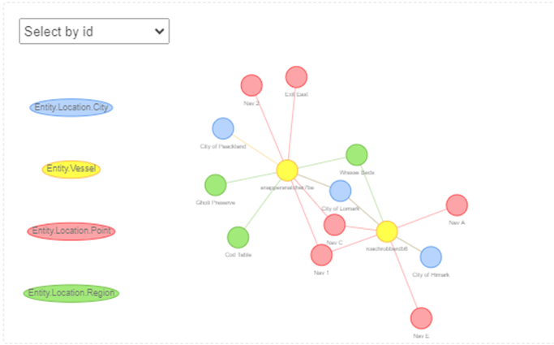
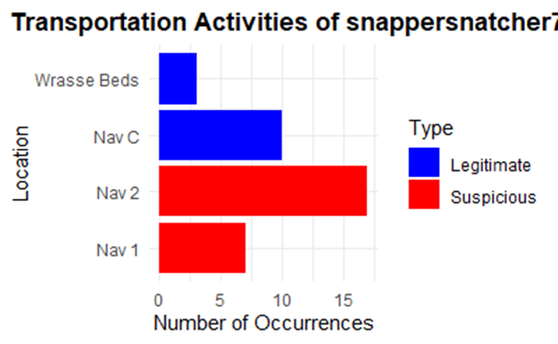
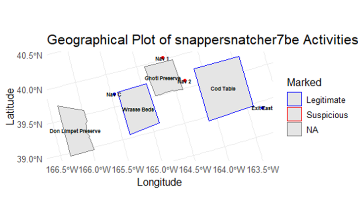
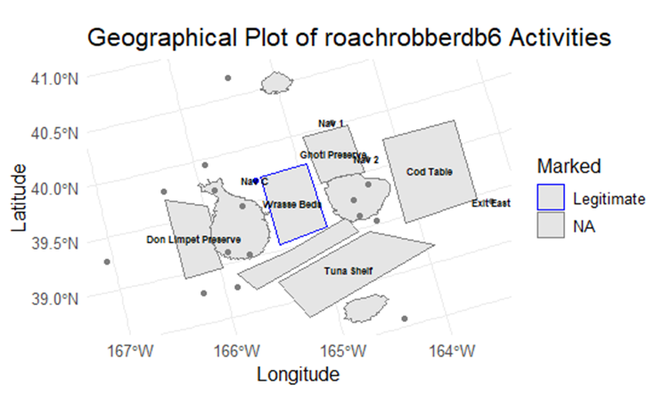

Project Proposal
Proposal Document for Visual Analytics Project
2024 VAST Challenge
https://vast-challenge.github.io/2024/MC2.html
1. Title
Visual Analytics for Monitoring and Preventing Illegal Fishing Activities in Oceanus
2. Motivation
Oceanus the island nation’s economy thrives on its fishing industry. The recent illegal fishing scandal involving SouthSeafood Express Corp has not only disrupted this vital sector but has also exposed significant gaps in monitoring and regulating fishing activities. By harnessing the power of visual analytics, this project aims to transform raw data into actionable insights, to unearth hidden patterns and to create a system capable of safeguarding Oceanus against future illegal activities.
3. Problem Statement
This project addresses the critical challenge of detecting and predicting illegal fishing operations in Oceanus.
The lack of accurate port records has led to a significant gap in tracking the true source and distribution of fish, making it difficult to enforce regulations and ensure sustainability.
This project aims to fill these critical gaps by developing advanced visual analytics tools that can effectively integrate and analyze diverse data sources, offering a more reliable solution to monitor and combat illegal fishing activities.”
5. Approach
We plan to analyze illegal fishing behavior and identify the anomalies in vessel movement and behavior through the R Shiny Web app. The application will have the following tabs:
- Vessel Movement: A tab that can visually indicate the path of a vessel historically. This can help identify any seasonal trends or deviations of a vessel from its usual path.
- Cargo and Vessel Matching: Matching the cargo visually to a vessel, the fish it contains, the date of delivery, and the city it was delivered to. This can be analyzed by the construction of a knowledge graph.
- SouthSeaFoodCorp Vessels: Suspicious behavior of SouthSeaFoodCorp Express Vessels. Comparison of their vessel trajectory and fishing contents with other vessels.
- Illegal activities after SouthSeaFoodCorp Express was caught: Behavior of the Shipping community after SouthSeaFoodCorp Express was caught.
Creation of Knowledge Graph to identify Cargo Vessel Match:
We have Cargo Transaction Records, Vessel Transponder Ping Records, Harbor Report Records and details of vessels and Locations. We can use this information to develop a possible cargo vessel mapping. Then we plan to do some data transformation to represent this visually through a Knowledge Graph.
Vessel Movement:
We can identify anomalies in vessel movement using DBSCAN Clustering. We already have coordinates of the cities and navigation points. Plotting out these can help us track vessel movements with time, identify seasonality and anomalies.
Knowledge Graph for zooming in on SouthSeaFoodCorp Vessels:
We can plot a graph to inspect activity of SouthSeaFoodCorp Vessels. This can be used to identify the fishing done, the timelines, the places of fishing and possibly isolate out the illegal activities. Once the event of SouthSeaFoodCorp being caught is identified we plan to do a temporal analysis for analyzing how other organizations changed their behavior.
Projected timeline:
The entire project will be done in 4 weeks.
Week1:
Matching cargo to the vessels
Digging deeper into SouthSeaFoodCorp Vessels
Week 2:
Plotting Vessel Movements to identify seasonality and anomalies.
Pinpointing the time when SouthSeaFoodCorp was caught and analyzing activities of other companies after that.
Week 3:
Incorporating codes into R Shiny
Identifying vessels showing behavior like SouthSeaFoodCorp vessels
Week 4:
Touch up R Shiny dashboard layouts.
Focus on completing activities remaining from Week 1, 2 & 3.
Elaborate on the kind of illegal activities the vessels are engaging in.
6. Early Prototypes/Storyboards
Diagram 1: EDA to understand the usual fishing spots and regions that are frequented by the suspected vessels
SouthSeafood Express Corp’s Activities

Diagram 2: Which locations should it not be at?

Diagram 3: Merging geospatial analysis with network analysis

Snappersnatcher7be appears to be frequently visiting areas Nav1 and Nav2, which are located around the Ghoti Preserve. Given the type of fish it typically catches, it should not be near these locations.
Diagram 4: The other vessel does not seem to demonstrate suspicious activities

7. Conclusion
Successful implementation of this project will deter illegal fishing practices through advanced detection capabilities, making it easier to implement regulations and promoting sustainable fishing practices.